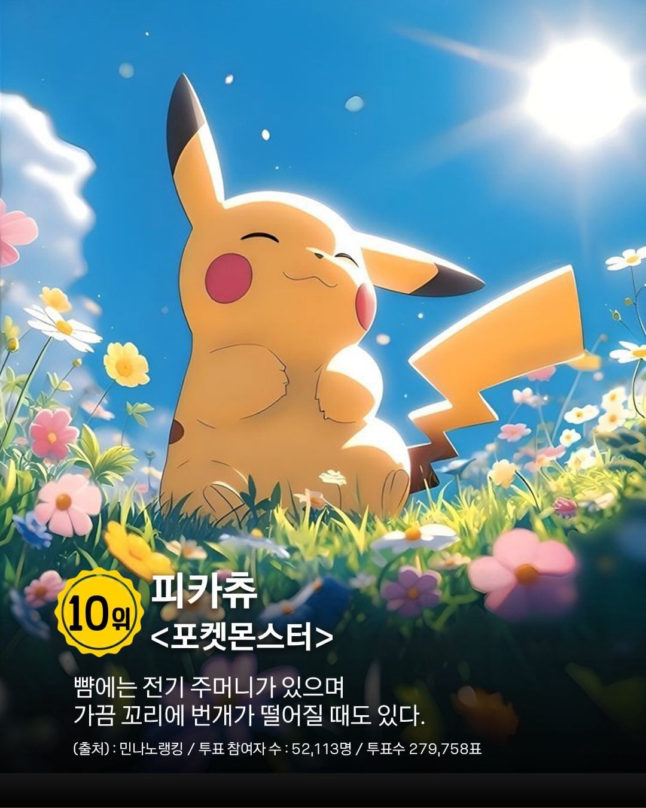
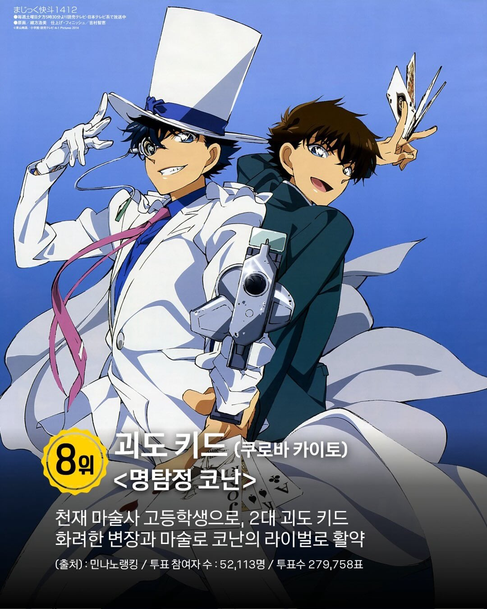
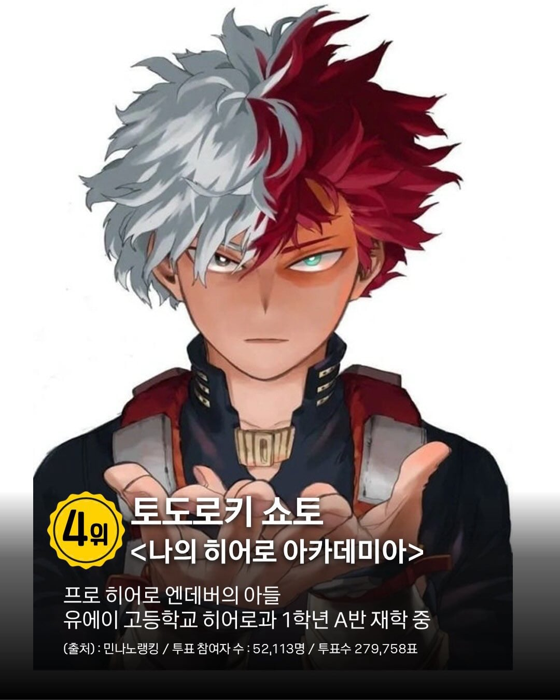
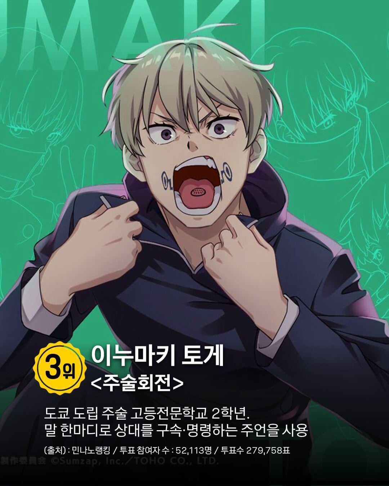
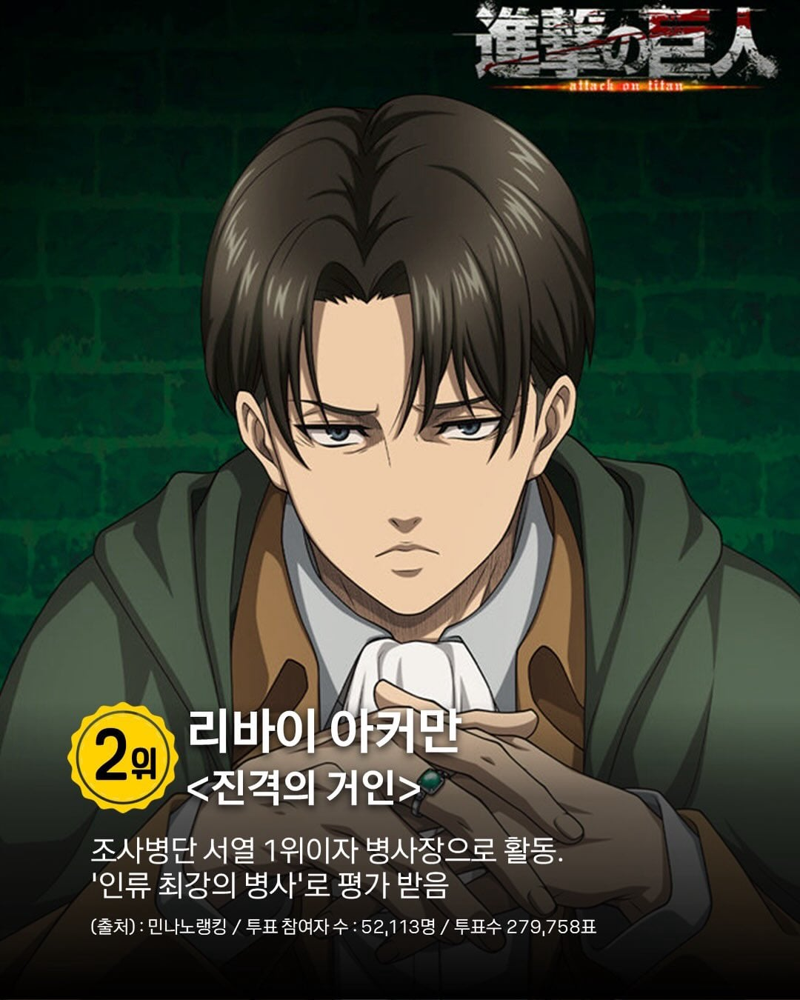
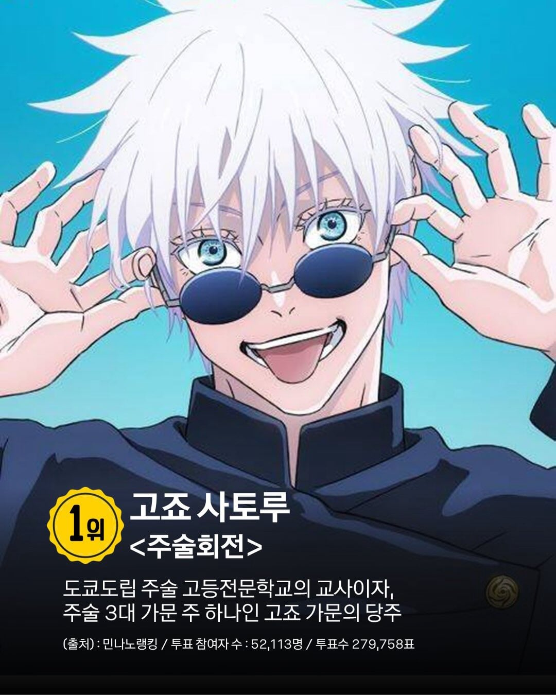
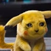

https://www.instagram.com/p/DZo-cbNkcqX/?img_index=11&mdxt=Yjh0cjRqMnJibHVk






https://www.instagram.com/p/DZo-cbNkcqX/?img_index=11&mdxt=Yjh0cjRqMnJibHVk
내가 지금 이 댓글 달려 했음. ㅋㅋㅋㅋ
부녀자픽 시발 ㅋㅋㅋ
bl랭킹임?
부녀자랭킹임?

참여자 5만2천인데 투표는 왜 27만이나돼
금권선거 한건가
히나코군은 초면인데여
무이치로는 암컷입니다
bl 동인지 빠는 부녀자 픽이잖아
저새낀 분량도없는데 왜 3위지?
대놓고 여초픽인데 뭐 대상자가 여타쿠 상대임?
일본인(동인녀)들이 좋아하는
피카추는 틀딱된거야?
틀딱츄야?
피카츄가 다 이겨야 정상아님?
시팔 올라갈수록 부녀자픽이자나
순서가 반대라고 봐도 납득이 안되는데 ㅋㅋ
코난은 이해가 안가는게
아직도보는 애들이.있나?
할매들이 계속 보는건가


부녀자랭킹이네
ㅋㅋㅋㅋ 특정 집단 의견을 일본인들이 좋아하는으로 확대 해버리는 ㅋㅋㅋ

어디 여초에서 조사햇나
어디다가 물어봤긱래 저 꼬라지임